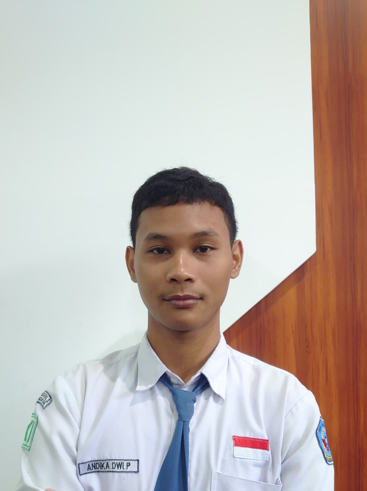
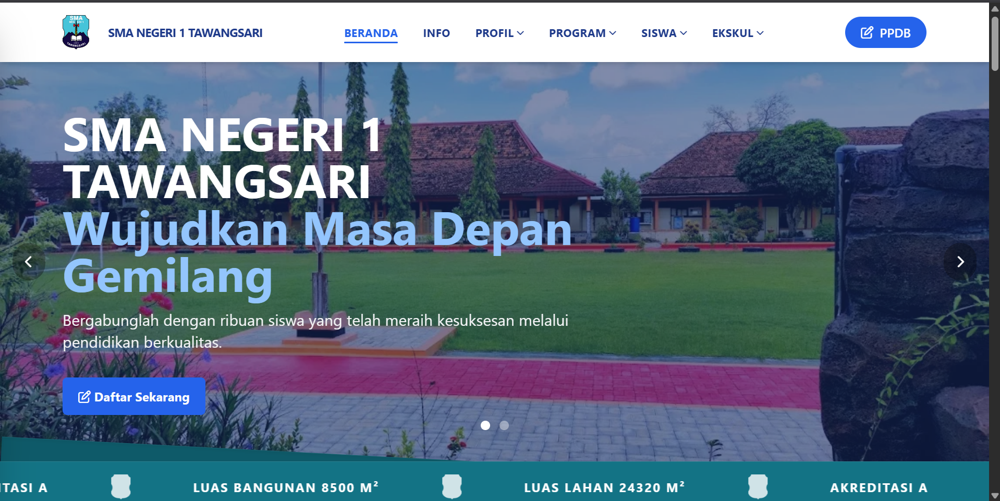
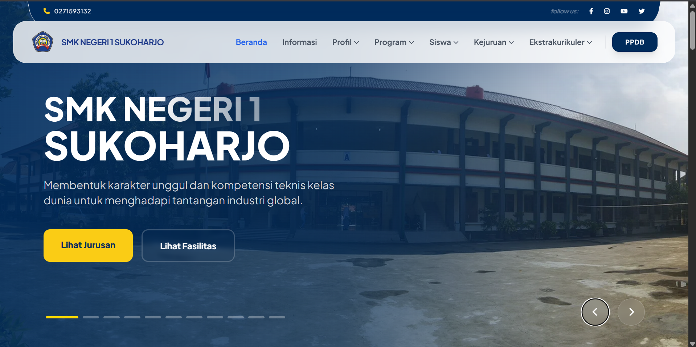
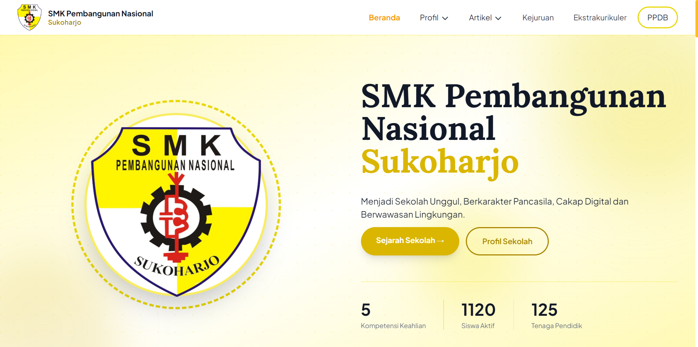
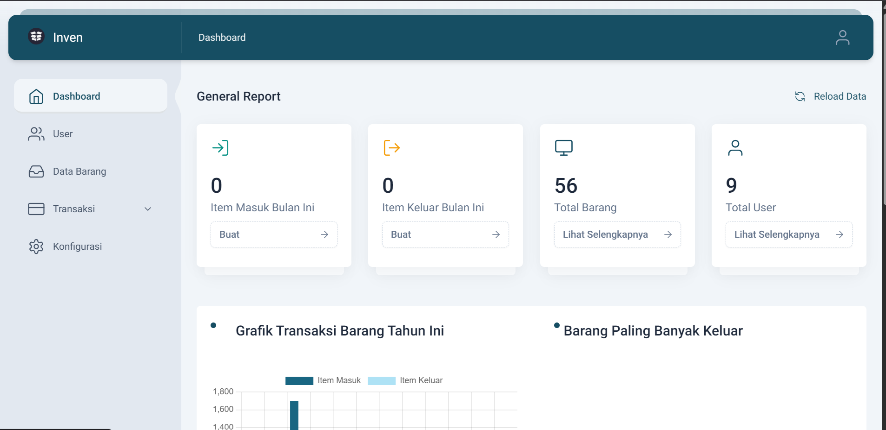
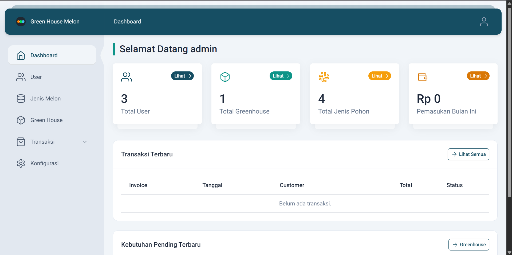

"Hail! I am a Web Developer, deeply enamoured with the aesthetics of retro-analogue, the vibrancy of modern interactivity."
Welcome unto my digital domain. I am a disciple of the software crafts, diligently pursuing the mysteries of engineering within the halls of vocational study. My devotion lieth in the forging of robust web applications, wherein the logic of the back-end and the grace of the front-end do meet.
With steadfast purpose, I wield the powers of PHP and the mighty Laravel framework to construct solid foundations, whilst shaping lively and responsive interfaces through the art of React.js. Every line of code I write is fashioned with precision, turning complex logic into seamless harmony for the modern age.

Official Digital Profile of SMAN 1 Tawangsari

Official Digital Profile of SMKN 1 Sukoharjo

Official Digital Profile of SMK Pembangunan Nasional

Streamlining Supply Chain and Logistics for Infrastructure Projects

Streamlining Inventory and Logistics for Modern Cultivation
Contacts and Social Media: